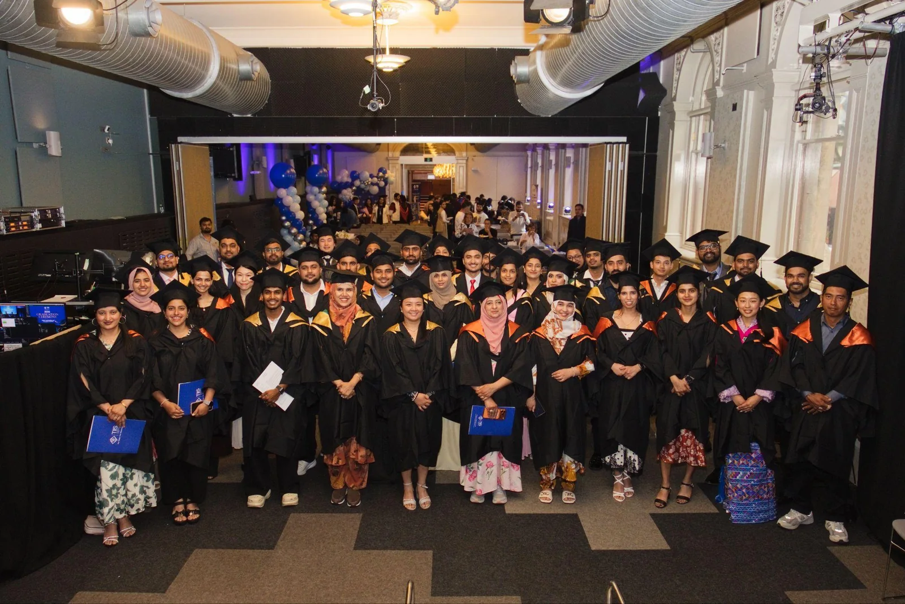
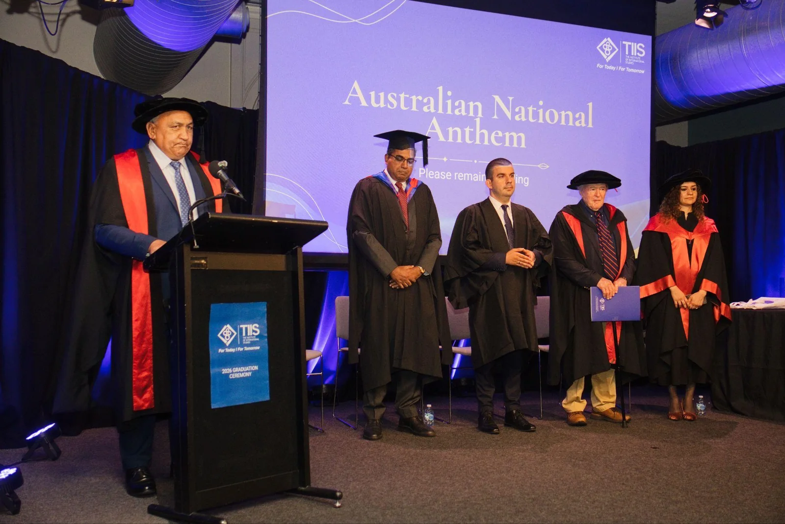
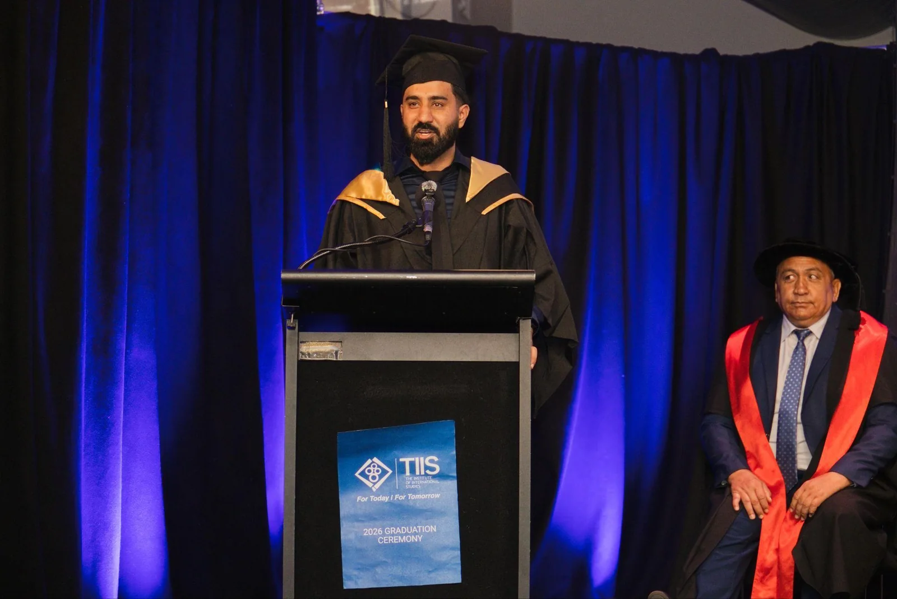
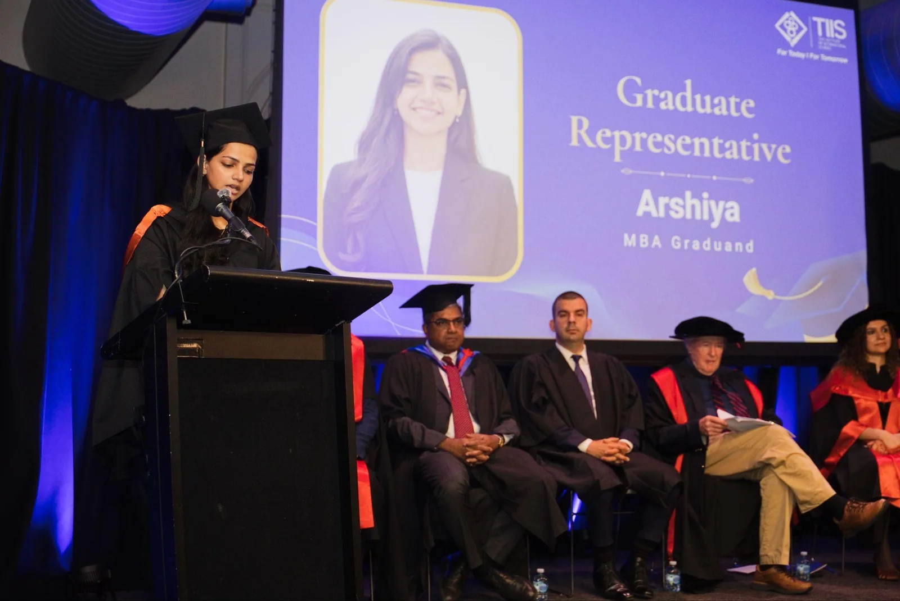
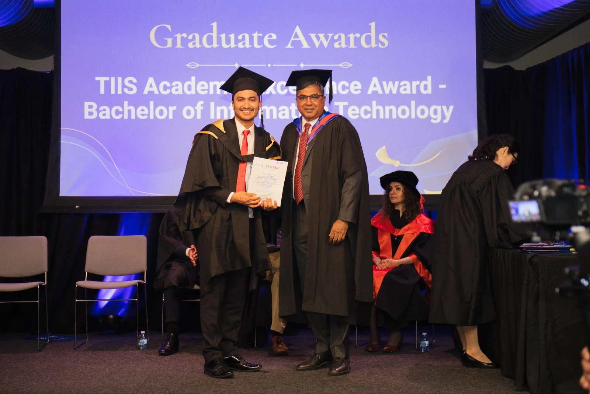
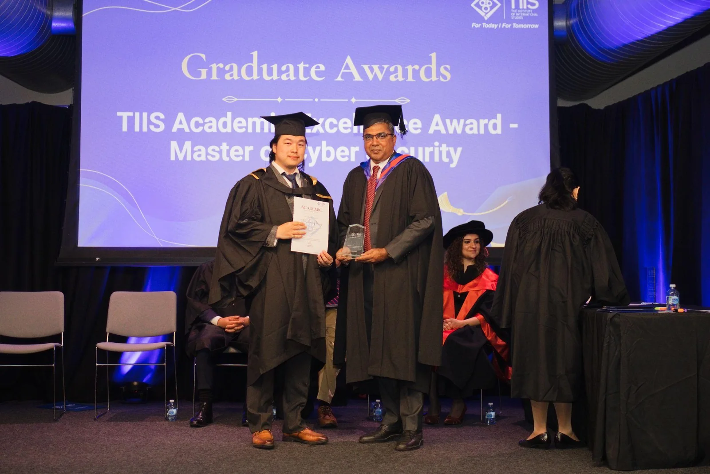
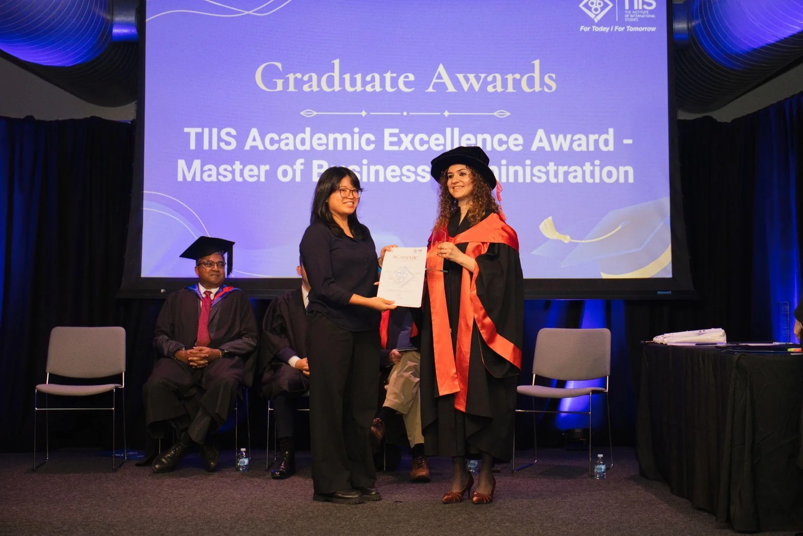
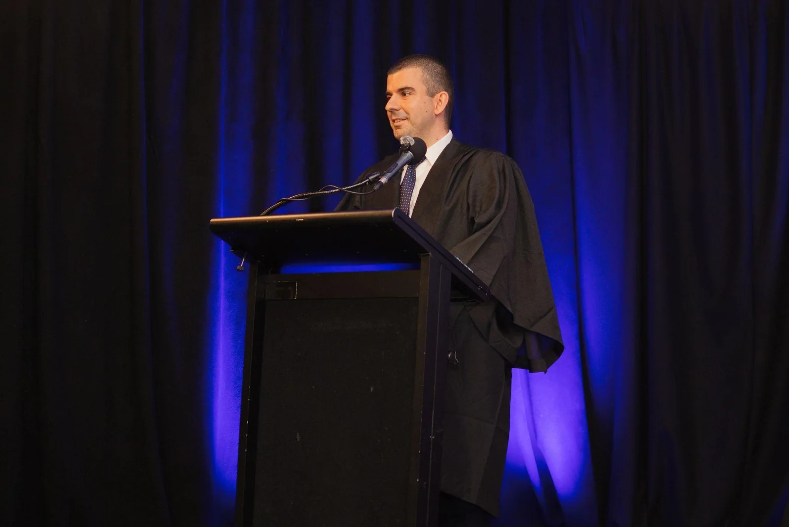
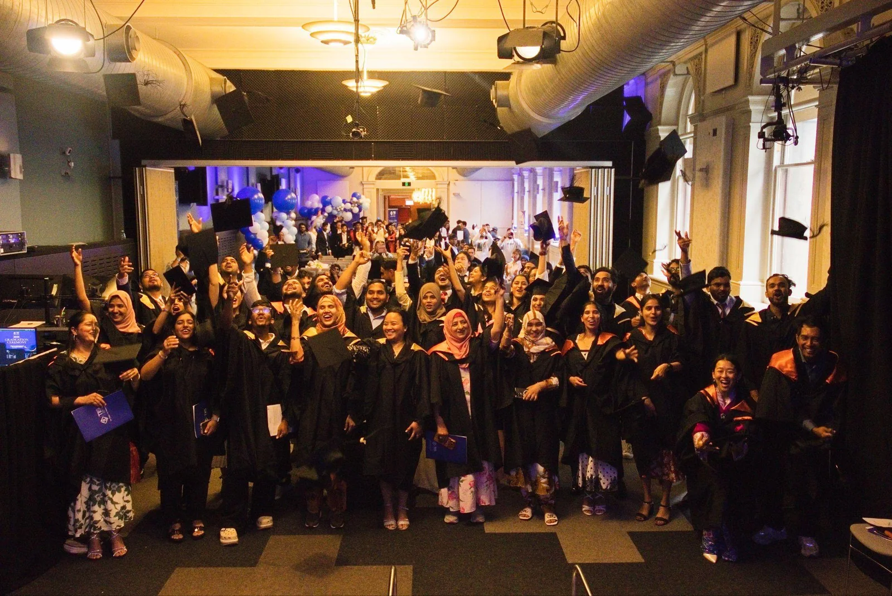

TIIS Melbourne Celebrates the Class of 2026: Honouring Excellence, Inspiring Tomorrow
Celebrating our graduates, their achievements and the community behind every journey.

The Wheeler Centre, Melbourne
The Institute of International Studies (TIIS) proudly celebrated the achievements of its graduating students at the 2026 Melbourne Graduation Ceremony, held on Friday, 20 November 2026, at The Wheeler Centre.
The ceremony brought together graduates, their families, academic and professional staff, and distinguished guests to celebrate the dedication, perseverance and personal growth that have shaped each graduate’s academic journey.
Reflecting TIIS’s institutional philosophy of “For Today, For Tomorrow”, the occasion marked not only the successful completion of an academic journey but also the beginning of a new chapter filled with opportunities, aspirations and responsibilities.
The ceremony commenced with the academic procession, followed by the Australian National Anthem and an Acknowledgement of Country, recognising the Traditional Custodians of the land on which the ceremony took place.
TIIS Academic Dean, Dr Trevor Clark, addressed the graduating class, acknowledging their achievements and reflecting on the significance of this important milestone.
The conferral of awards was led by the Chair of the TIIS Board of Directors, Professor Peter Flood, with graduates receiving qualifications across the following programs:
- Bachelor of Business
- Bachelor of Information Technology
- Master of Cyber Security
- Master of Business Administration
These achievements reflect TIIS’s commitment to providing quality higher education that equips students with the knowledge, professional capabilities and confidence to succeed in an increasingly dynamic world.

Voices of Our Graduates
Representing their graduating cohorts, Hassan Nawaz, a Master of Cyber Security graduate, and Arshiya, a Master of Business Administration graduate, shared their reflections on their academic journeys, achievements and experiences at TIIS.
Their addresses reminded everyone that behind every qualification lies a personal story of ambition, determination, sacrifice and growth.
One of the most memorable moments of the ceremony was the traditional turning of the tassels, symbolising the transition from academic study to the next chapter of professional and personal life.


Recognising Academic Excellence and Leadership
The ceremony also recognised graduates who demonstrated outstanding academic achievement, leadership and meaningful contributions to the TIIS community through the presentation of the 2026 Graduate Awards.
Several of these awards were presented by Mr Anand Karuppiah, Chief Executive Officer of TIIS, and Dr Wajeeha Khalil, Associate Dean at the Melbourne campus, in recognition of the recipients’ outstanding achievements and contributions.




Special congratulations go to Ms Krizia Marian Fernandez Abellon, who received both the TIIS Academic Excellence Award and the TIIS Graduate Leadership & Community Engagement Award. This exceptional achievement reflects her academic excellence, leadership and commitment to the wider TIIS community.
Both awards were proudly accepted on her behalf by her sister.
Her achievement exemplifies TIIS’s belief that higher education is not simply about acquiring knowledge and achieving academic success, but also about developing character, demonstrating leadership and making meaningful contributions to society.
Recognising the Dedication of Our Melbourne Campus Team
Behind the success of our graduates is a dedicated team of academic and professional staff who have supported, guided and encouraged students throughout their studies.
Our graduating students are deeply grateful for the dedication, professionalism and genuine care demonstrated by the staff members at TIIS’s Melbourne campus.
Particular appreciation goes to Dr Wajeeha Khalil, Associate Dean at the Melbourne campus, and Mr Jackie Lu, Student Services Officer at the Melbourne campus, for their ongoing commitment to student success, academic development and wellbeing.
Their dedication, together with the collective efforts of our Melbourne academic and professional staff, has contributed to creating a welcoming, supportive and inclusive learning environment where students feel valued, encouraged and empowered to achieve their aspirations.
TIIS sincerely thanks all staff members for their hard work, professionalism and commitment to making a positive difference in the lives of our students.
Inspiring the Next Generation – Guest Speaker Dr Ari Pinar
TIIS was delighted to welcome Dr Ari Pinar FHEA FTGN, Cognitive Neuroscientist and Founder of Kiddi® Interactive, as the distinguished guest speaker.
Drawing on his professional experience in cognitive neuroscience and entrepreneurship, Dr Pinar encouraged graduates to reflect on the value of time, the importance of making purposeful choices and the opportunities that each new day presents.
His inspiring address reminded graduates that success is shaped not only by the qualifications they attain but also by how they embrace opportunities, respond to challenges and make meaningful use of their knowledge, talents and time.
His message resonated strongly with TIIS’s philosophy of preparing students not only for the demands of today but also for the possibilities of tomorrow.

A Celebration to Remember
The ceremony concluded with a joyful cap toss and group photograph, capturing the excitement, pride and sense of accomplishment shared by graduates and the wider TIIS community.
For every graduate, this occasion represented much more than the completion of a qualification. It was a celebration of years of learning, challenges overcome, friendships established and personal transformation. It was also an opportunity to acknowledge the families, friends, academic staff and professional support teams whose encouragement and dedication have contributed to the success of our graduates.
For Today, For Tomorrow
Graduation is not the end of learning. It is the beginning of a new journey.
As the professional landscape continues to evolve through technological advancement, innovation and changing societal needs, the ability to embrace change, think independently and continue learning will become increasingly important.
At TIIS, we aspire to provide education that is relevant today while equipping our students with the knowledge, confidence, integrity and capabilities to shape a better tomorrow.
To our Class of 2026, we encourage you to pursue your ambitions with determination, embrace new opportunities with confidence and make meaningful contributions to your professions and communities.
Your time as a student may have come to an end, but your connection with the TIIS community continues. Wherever your journey takes you, you will always remain part of the TIIS family.
Congratulations to the TIIS Melbourne Class of 2026!
Celebrate your achievements today. Create your opportunities tomorrow.
